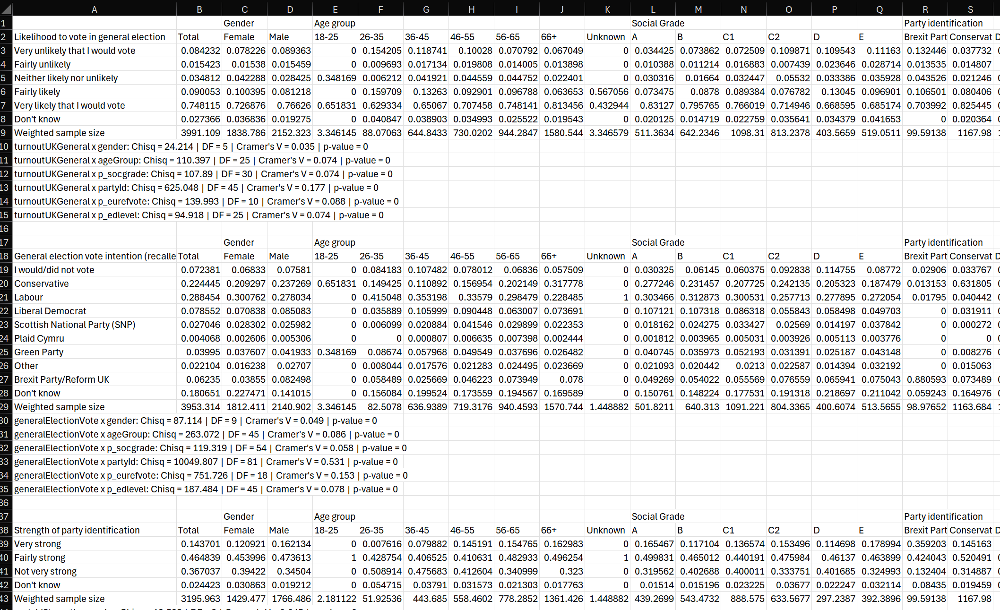
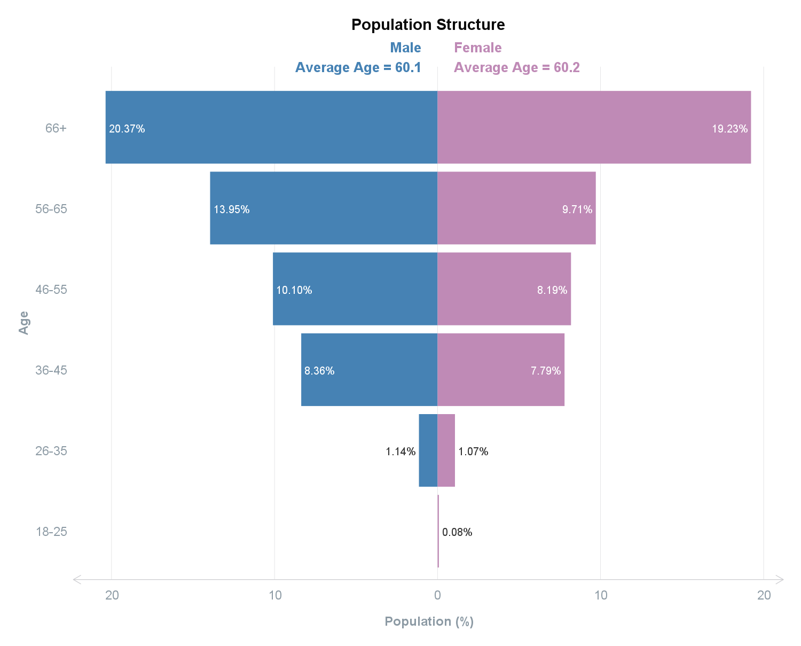
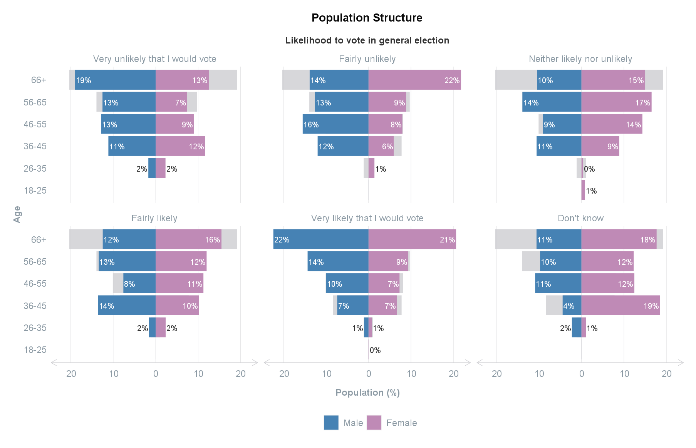
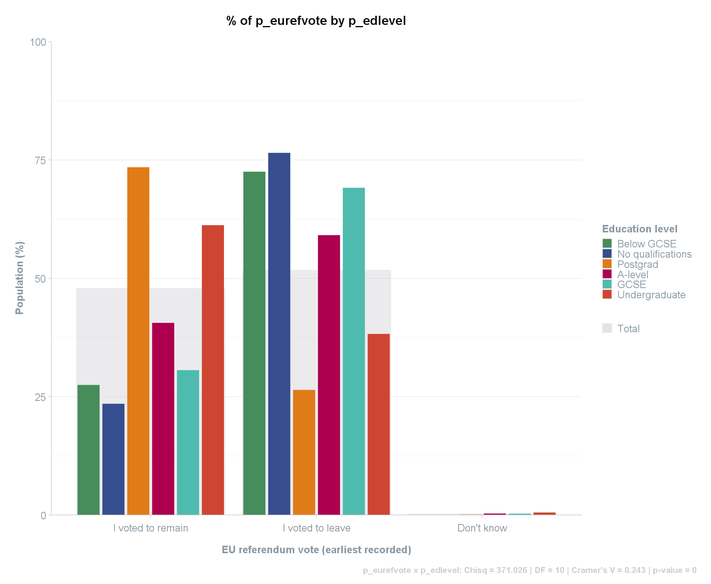
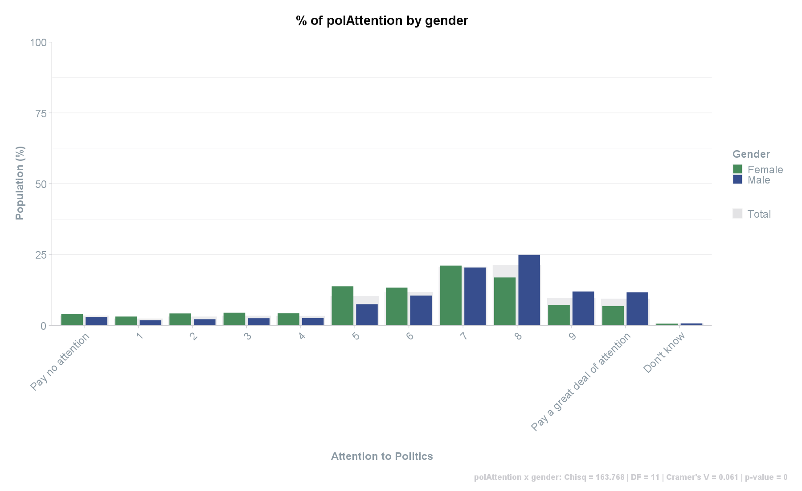
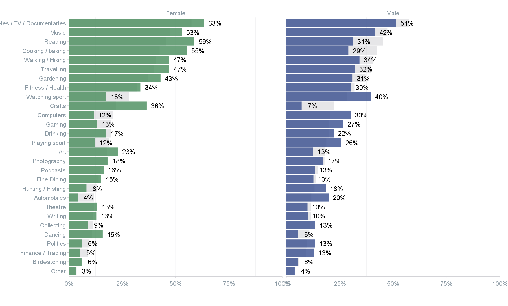

This article aims to guide you through the process of uploading, processing, and exploring survey data.
Step 1: Upload
Using data from packages
If you are using the sample dataset within this package, use the
following get_data function to access and save it as a data
frame.
df <- get_data("survey")Note on the sample data: the data only contains a small portion
of full survey data from the British Electoral Survey. This article does
not analyse the full survey data and is only used as an example for how
to use the functions within the scgUtils package. The full
survey data can be found here: https://www.britishelectionstudy.com/data-object/wave-25-of-the-2014-2023-british-election-study-internet-panel/
Using other data
Alternatively, if you are uploading your own data, you can use the haven package to
read an SPSS file in R.
df <- haven::read_sav("your_survey_data.sav")Troubleshooting read_sav():
NB if an error occurs which relates to encoding, try adding
encoding="latin1". Once you have uploaded the data, view
which string is causing the error. This may have been caused by
NAs which will require you to convert them from a string to
NA. For example:
df <- haven::read_sav("your_survey_data.sav", encoding = "latin1")
# Additional step to amend error across entire dataset (all columns)
df[df == "__NA__"] <- NAStep 2: View
View the first 6 rows of the data file and the details of each column
# NB first 3 variables shown only
head(df[, 1:3])
# A tibble: 6 x 3
# id wt turnoutUKGeneral
# <dbl> <dbl> <dbl+lbl>
# 1 7 0.376 5 [Very likely that I would vote]
# 2 14 0.553 5 [Very likely that I would vote]
# 3 15 0.712 5 [Very likely that I would vote]
# 4 18 0.440 4 [Fairly likely]
# 5 19 0.361 5 [Very likely that I would vote]
# 6 24 1.69 5 [Very likely that I would vote]You can also view the original questionnaire and values easily by
using the sjPlot
package.
# NB first 10 variables shown only
sjPlot::view_df(df[, 1:10])Step 3: Clean
Converting labelled data into factors
To add remove the labels from the variables and convert them into
factors, use the labelled
package.
df <- labelled::unlabelled(df)
# NB first 3 variables shown only
head(df[, 1:3])
# A tibble: 6 x 3
# id wt turnoutUKGeneral
# <dbl> <dbl> <fct>
# 1 7 0.376 Very likely that I would vote
# 2 14 0.553 Very likely that I would vote
# 3 15 0.712 Very likely that I would vote
# 4 18 0.440 Fairly likely
# 5 19 0.361 Very likely that I would vote
# 6 24 1.69 Very likely that I would voteRemoving unused factor levels
Sometimes there will be circumstances where you have unused factor levels, such as “Under 18” (often occurs in surveys which disqualifies certain respondents from participating).
levels(df$ageGroup)
#> [1] "Under 18" "18-25" "26-35" "36-45" "46-55" "56-65"
#> [7] "66+"To remove all unused factor levels across the dataset, you can use
the remove_levels function.
df <- remove_levels(df)Using this function will ensure that the metadata is retained and can still be accessed.
# "Under 18" has not been removed:
levels(df$ageGroup)
#> [1] "18-25" "26-35" "36-45" "46-55" "56-65" "66+"
# The metadata containing the question/label for this column remains:
attr(df$ageGroup, "label")
#> [1] "Age group"Step 4: Weighting
Section and functions to be added in the future (for survey data without a weighting variable)
Step 5: Explore
Numeric data
To explore numeric data, descriptive statistics can easily be found
using summary and a combination of tapply and
summary for statistics by group. These are for unweighted
data only, however.
summary(df$age)
#> Min. 1st Qu. Median Mean 3rd Qu. Max.
#> 18.00 55.00 66.00 63.58 73.00 93.00
# By group:
tapply(df$age, df$gender, summary)
#> $Male
#> Min. 1st Qu. Median Mean 3rd Qu. Max.
#> 30.00 56.00 66.00 64.15 74.00 93.00
#>
#> $Female
#> Min. 1st Qu. Median Mean 3rd Qu. Max.
#> 18.00 54.00 66.00 62.97 73.00 93.00To find the average of numeric data, use the mean or
weighted.mean functions from the stats package
(base R).
# Unweighted:
mean(df$age)
#> [1] 63.5824
# Weighted:
weighted.mean(df$age, df$wt)
#> [1] 60.17577To find weighted or unweighted averages by one or many group
variables, use the grp_mean function.
# By a single group:
grp_mean(df,
meanVar = "age",
groups = "gender",
weight = "wt" # optional
)
#> gender Mean
#> 1 Male 60.14175
#> 2 Female 60.21559
# By many groups:
grp_mean(df,
meanVar = "age",
groups = c("gender", "partyId"),
weight = "wt", # optional
set_names = c("Gender", "Party Identification", "Average Age"), # change names
round_decimals = 2 # round decimal places to 2 digits
)
#> Gender Party Identification Average Age
#> 1 Male Conservative 64.60
#> 2 Female Conservative 65.86
#> 3 Male Labour 59.81
#> 4 Female Labour 59.29
#> 5 Male Liberal Democrat 60.44
#> 6 Female Liberal Democrat 59.71
#> 7 Male Scottish National Party (SNP) 60.70
#> 8 Female Scottish National Party (SNP) 60.01
#> 9 Male Plaid Cymru 58.51
#> 10 Female Plaid Cymru 52.41
#> 11 Male Green Party 55.97
#> 12 Female Green Party 57.01
#> 13 Male Other 62.45
#> 14 Female Other 64.69
#> 15 Male No - none 55.95
#> 16 Female No - none 56.27
#> 17 Male Brexit Party/Reform UK 62.17
#> 18 Female Brexit Party/Reform UK 67.62
#> 19 Male Don't know 54.33
#> 20 Female Don't know 55.12
# NB. The `dplyr` equivalent is:
# df %>%
# group_by(gender, partyId) %>%
# summarise(Mean = weighted.mean(age, wt))Categorical data
For categorical data, use the crosstab function and set
statistics = TRUE to include statistics for each
crosstab.
crosstab(df,
rowVar = "partyId",
colVar = "gender",
weight = "wt", # optional
format = "df_wide",
round_decimals = 2,
statistics = TRUE
)
# [1] partyId x gender: Chisq = 29.054 | DF = 9 | Cramer's V = 0.028 | p-value = 0.001
# partyId Total Female Male
# 1 Conservative 29.26 27.41 30.85
# 2 Labour 24.14 25.38 23.09
# 3 Liberal Democrat 5.84 5.64 6.00
# 4 Scottish National Party (SNP) 2.55 2.89 2.26
# 5 Plaid Cymru 0.37 0.32 0.41
# 6 Green Party 2.52 2.17 2.81
# 7 Other 1.36 1.05 1.63
# 8 No - none 27.35 27.93 26.85
# 9 Brexit Party/Reform UK 2.50 1.91 3.00
# 10 Don't know 4.12 5.31 3.10To see the data presented as a frequency instead of a percentage,
without totals, and in a longer format, input the following into the
crosstab function:
crosstab(df,
rowVar = "partyId",
colVar = "gender",
weight = "wt", # optional
format = "df_long", # default option
round_decimals = 2,
totals = FALSE,
convert_to = "frequency"
)
# partyId gender Freq
# 1 Conservative Male 663.95
# 2 Labour Male 496.94
# 3 Liberal Democrat Male 129.14
# 4 Scottish National Party (SNP) Male 48.73
# 5 Plaid Cymru Male 8.81
# 6 Green Party Male 60.48
# 7 Other Male 35.09
# 8 No - none Male 577.89
# 9 Brexit Party/Reform UK Male 64.56
# 10 Don't know Male 66.73
# ...To automate the above across all variables, the compile
function can first create a data frame of all statistics (Chi-square,
Degrees of Freedom, Cramer’s V, and p-value).
# the row variables are typically your questions within the survey. For ease, utilise dplyr to select the variables
rowVars <- names(df %>% dplyr::select(turnoutUKGeneral:partyIdStrength,
partyIdSqueeze:likeGrn,
pcon:p_hh_size,
p_disability:p_past_vote_2019,
p_eurefturnout))
# the column variables tend to be the demographic variables
colVars <- c("gender", "ageGroup", "p_socgrade", "partyId", "p_eurefvote", "p_edlevel")
# compile stats and save to data frame called `stats`
stats <- compile(df,
rowVars = rowVars,
colVars = colVars,
weight = "wt", # optional
save = FALSE, # turn this to FALSE to prevent saving as a .csv
format = "statistics")
# View first 10, sorted by Cramer's V
head(stats[order(-stats$CramersV),], 10)
# Row_Var Col_Var Size Chisq DF CramersV p_value
# 10 generalElectionVote partyId 3953.314 10049.807 81 0.531 0
# 316 p_past_vote_2017 partyId 3545.672 5251.916 72 0.430 0
# 52 bestOnMII partyId 3719.803 5886.195 81 0.419 0
# 310 p_past_vote_2015 partyId 3567.690 5054.699 81 0.397 0
# 258 p_education_age p_edlevel 3465.861 3157.122 30 0.390 0
# 322 p_past_vote_2019 partyId 3551.306 4736.332 90 0.365 0
# 248 p_job_sector ageGroup 3991.109 1706.840 20 0.327 0
# 200 p_work_stat ageGroup 3991.109 2857.155 35 0.320 0
# 298 p_past_vote_2010 partyId 3511.013 3182.663 81 0.317 0
# 304 p_past_vote_2005 partyId 3222.173 2868.127 81 0.314 0Using the same colVars and rowVars as
above, the compile function can also be used to iterate
through each variable and produce tables, saved into a csv. Once in the
csv, the tables can be formatted.
compile(df,
rowVars = rowVars,
colVars = colVars,
weight = "wt", # optional
name = "crosstabs" # this will save as "crosstabs.csv"
)
Grid data
In surveys, there are often “Please select all that apply” type questions or a grid formation for the question (e.g., Do you have a favourable or unfavourable impression of the following political leaders?“). In these circumstances, the results for the question is separated out into many columns, making it difficult to compare.
To resolve this, use the grid_vars function. This
function provides the Question (the named list), the Response, and the
frequency and percent. The result is provided in a long format so it can
easily be used in ggplot2 for
visualisation.
# Create a named list of the columns that relate to the question
vars <- list(likeSunak = "Rishi Sunak",
likeStarmer = "Keir Starmer",
likeCon = "Conservative Party",
likeLab = "Labour Party",
likeLD = "Lib Dems",
likeSNP = "SNP",
likePC = "Plaid Cymru",
likeBrexitParty = "Brexit Party",
likeGrn = "Green Party"
)
grid_vars(df,
vars = vars,
weight = "wt" # optional
)
# Question Response Freq Perc
# 1 Brexit Party Strongly dislike 1369.44 34.31
# 2 Conservative Party Strongly dislike 1260.06 31.57
# 3 Green Party Strongly dislike 810.10 20.30
# 4 Keir Starmer Strongly dislike 850.59 21.31
# 5 Labour Party Strongly dislike 839.85 21.04
# 6 Lib Dems Strongly dislike 776.15 19.45
# 7 Plaid Cymru Strongly dislike 83.67 28.25
# 8 Rishi Sunak Strongly dislike 776.61 19.46
# 9 SNP Strongly dislike 181.45 38.11
# 10 Brexit Party 1 208.83 5.23
# ...This grid_vars function can also be used with a
group variable.
grid_vars(df,
vars = vars,
group = "gender",
weight = "wt" # optional
)
# Question Response gender Freq Perc
# 1 Brexit Party Strongly dislike Male 825.56 38.36
# 2 Conservative Party Strongly dislike Male 706.28 32.81
# 3 Green Party Strongly dislike Male 548.62 25.49
# 4 Keir Starmer Strongly dislike Male 511.98 23.79
# 5 Labour Party Strongly dislike Male 478.74 22.24
# 6 Lib Dems Strongly dislike Male 498.82 23.18
# 7 Plaid Cymru Strongly dislike Male 50.76 31.78
# 8 Rishi Sunak Strongly dislike Male 463.44 21.53
# 9 SNP Strongly dislike Male 106.10 42.47
# 10 Brexit Party 1 Male 129.24 6.00
# ...Step 6: Visualise
Population structure
To view the population profile of the respondents, use the
plot_popn function. If no meanVar is provided, the graph
will show just the Male and Female titles without the average age
provided.
plot_popn(data = df,
xVar = "gender",
yVar = "ageGroup",
weight = "wt", # optional
meanVar = "age", # optional (must be numeric)
addLabels = "yes" # to add % labels
)
The plot_popn function can also be facetted by a group.
This will show each value of the selected group and overlay the results
onto the total population population structure (in grey). The function
will also automatically capture the metadata providing the
question/label and provide this as the subtitle for ease of
understanding.
plot_popn(data = df,
xVar = "gender",
yVar = "ageGroup",
group = "turnoutUKGeneral",
weight = "wt", # optional
addLabels = "yes" # to add % labels
)
Crosstabs
To visualise crosstab data, use the crosstab function by
specifying plot = TRUE.
crosstab(df,
rowVar = "p_eurefvote",
colVar = "p_edlevel",
weight = "wt",
plot = TRUE,
statistics = TRUE
)
If there are many variables along the X-axis, these can be rotated by
45 degrees with adjustX = "yes".
crosstab(df,
rowVar = "polAttention",
colVar = "gender",
weight = "wt",
plot = TRUE,
statistics = TRUE,
adjustX = "yes"
)
Binary data
The plot_binary function utilises the
grid_vars function. As such, it takes similar data except
is specific to binary data (e.g., “Yes” and “No”). The sample survey
data unfortunately does not have this type of data but it is constructed
similarly to the grid data above, whereby a vars named list
is created and then implemented through the function.
# As an example:
vars <- list(p1 = "Music",
p2 = "Reading",
p3 = "Cooking / baking",
p4 = "Computers",
p5 = "Watching sport",
#... etc.
)
plot_binary(survey_data_with_binary_data_columns,
vars = vars,
group = "gender", # optional
weight = "wt" # optional
)
Flow data
To visualise the flow of data, use the plot_sankey
function. To do this, the data can easily be prepared using the
grp_freq function.
# Subset the required columns from the dataset
sankey_df <- df[, c("wt", "generalElectionVote", "p_past_vote_2019")]
# Get the frequency
sankey_df <- grp_freq(sankey_df,
groups = c("generalElectionVote", "p_past_vote_2019"),
weight = "wt" # optional
)
head(sankey_df)
# generalElectionVote p_past_vote_2019 Freq
# 1 I would/did not vote Conservative 74.929191
# 2 Conservative Conservative 793.364394
# 3 Labour Conservative 123.625176
# 4 Liberal Democrat Conservative 49.939047
# 5 Scottish National Party (SNP) Conservative 1.606790
# 6 Plaid Cymru Conservative 2.361066
# NB. The `dplyr` equivalent is:
# df %>%
# group_by(generalElectionVote, p_past_vote_2019) %>%
# summarise(Freq = sum(wt))The plot_sankey function takes many different options,
so that you can adjust the diagram to suit your data. In this example,
the 2019 Vote is on the left and the voting intention is on the
right.
The colours parameter uses a special function called
colour_prep which takes the two source and target columns
from the original dataset, combines them and then attempts to match the
political party names to those listed in the polUK palette
that is stored within the scgUtils package (E.g., “Scottish
National Party (SNP)” in the survey data is matched to “SNP” in the
palette and is therefore assigned the SNP’s hexidecimal colour,
#FFF95D).
NB. If you wish to name a list or vector of colours, this can be done
as the plot_sankey function will convert it to the correct
hexidecimal code (e.g., c(“yellow”, “red”, “blue”, “pink”, “green”,
“grey”)).
plot_sankey(sankey_df,
source = "p_past_vote_2019", # on the left side
target = "generalElectionVote", # on the right side
value = "Freq",
units = "votes",
colours = colour_prep(df, c("generalElectionVote", "p_past_vote_2019"), pal_name = "polUK"),
fontSize = 16, # change font size
fontFamily = "Calibri", # default
nodeWidth = 20, # default
nodePadding = 10, # default
margin = list("left" = 0, "right" = 130), # adjust the margin
width = 1200, # default
height = 800, # default
shiftLabel = NA # default
) # %>%
# save from viewer to html
# htmlwidgets::saveWidget(file = "sankey_VI.html", selfcontained = TRUE)